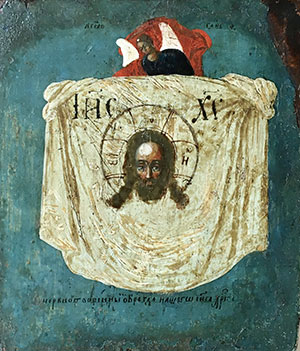
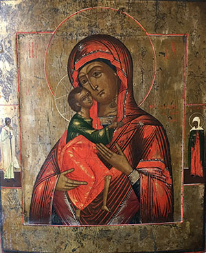

Icons
Icons

- 
- 
As a unique phenomenon in the sacral art of painted images, and an integral part of the religious life of the Eastern Orthodox Church, icons present a special challenge in the conservation field. They can not be properly approached unless their spiritual and material aspects are understood and taken into consideration.
The history of religious icons goes back to the beginnings of Christianity. They were made in various ways, using paints, mosaic, metal, stone, casting, textile or ivory. Still, the most common (in Olga’s studio) and readily recognizable are icons made using tempera paints on wooden panels. Sometimes icons have beautifully crafted metal covers.
For the faithful, looking at an icon means to be in the presence of the Sacred. What one sees is the transfigured world devoid of naturalism, but strong in its symbolism and spiritual timelessness. Even the technique itself of making an icon, with detailed instructions (and consecration by a priest) is steeped in canonical traditions and rich with symbolism.
As an Orthodox priest’s daughter, Olga was surrounded, early on, by the natural realm of icons: iconostasis walls of churches, lit with the flickering light of candles, chandeliers or constantly changing daylight coming through stained glass windows. In private homes, she used to see family icons being intimately venerated, often touched and kissed. Many old icons that find their way to Olga’s studio today traveled from far away, accompanied by family stories of escapes and wars, determination and faith.
Although created for liturgical use or personal devotion, icons can be found today in museums, galleries, private collections or antique stores. For an icon conservator, the biggest challenge lies in deciding how much to restore. The question is closely related to an icon’s condition, and its (future) setting. If the face or the eyes of a saint are missing, can such icon still be used for praying by a religious owner? More often though, an icon is considered as an aesthetically pleasing work of art. That approach directs the conservation treatment primarily towards preserving what is there instead of reconstructing what is missing. It is in constant dialogue between Olga and her clients that every icon receives a unique treatment plan.